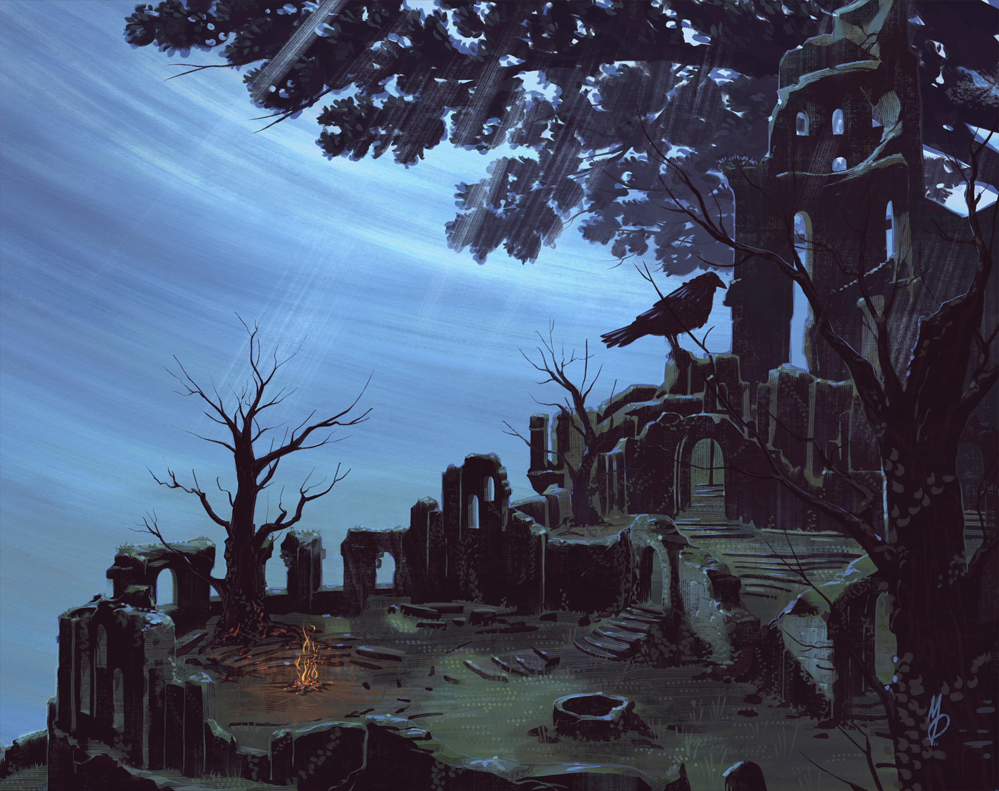
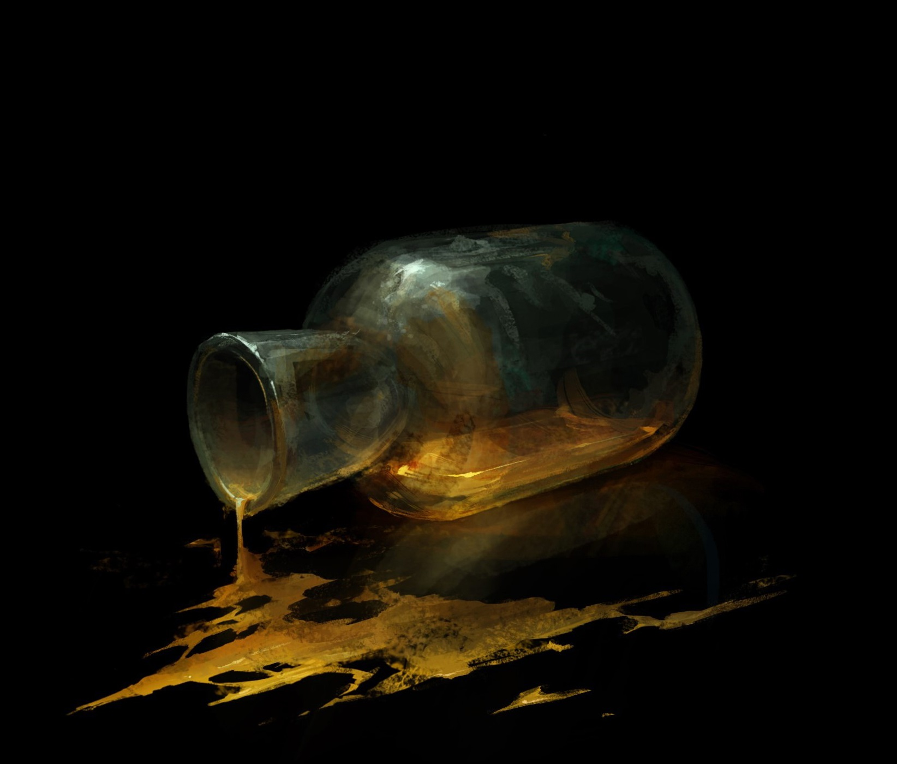
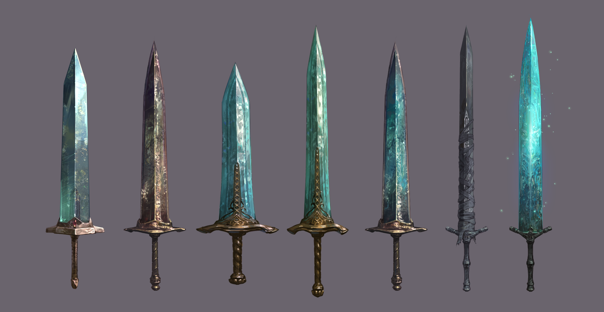
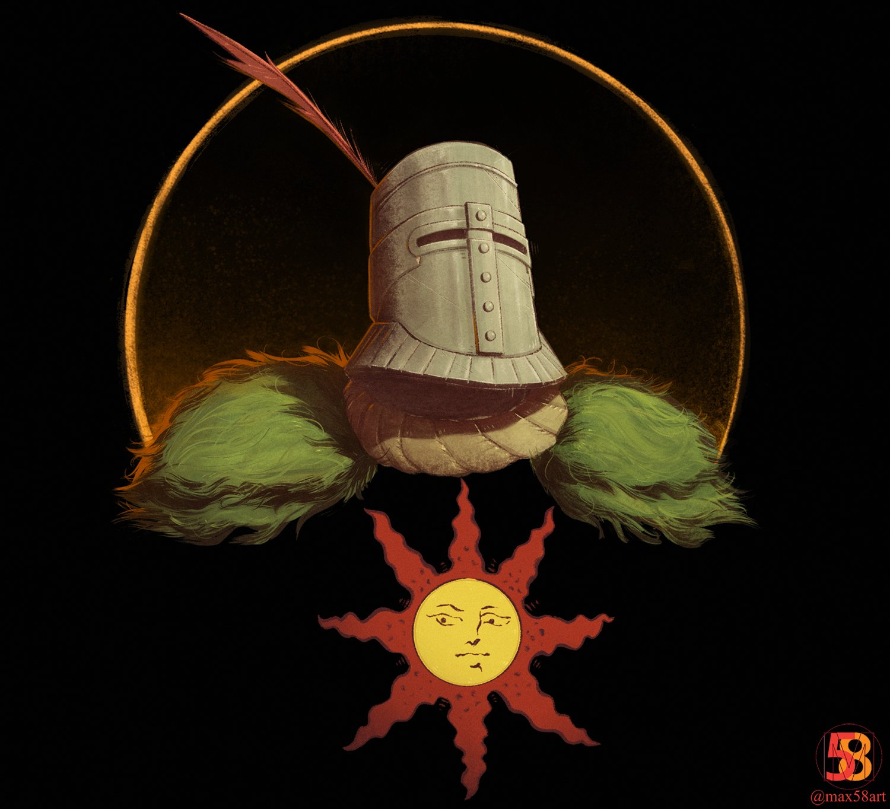
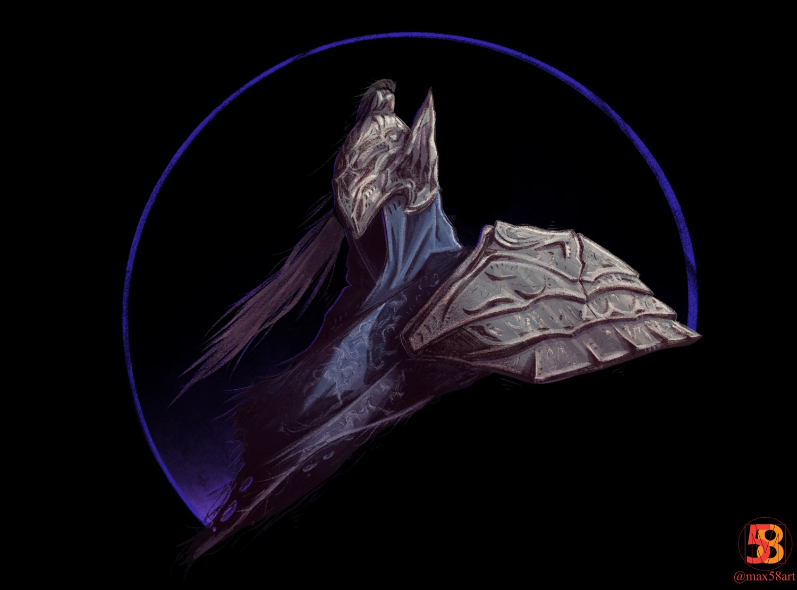
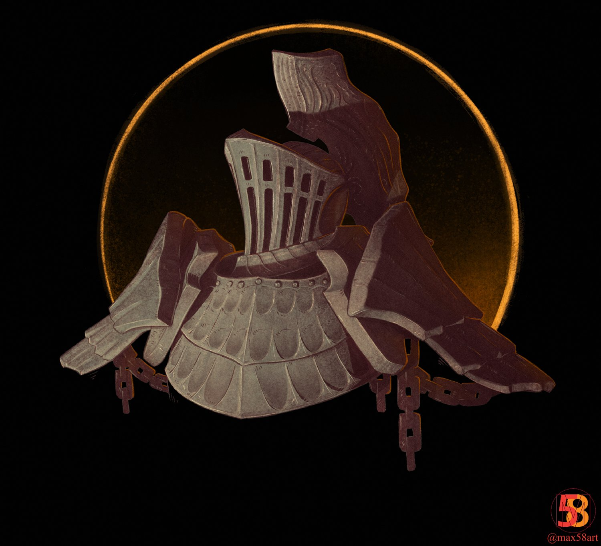

Our Discoveries
Some of our recent discoveries of items and landmarks

Firelink. While the landscape is treacherous, it is a safe location.


Estus Flask. Found intact. Unkown energy remains.


The Moonlight Greatsword iderations found scattered throughout the realm.
Our Team
Johnny Souls
Founder & Field Archaeologist

Solaire Astora
Navigator & Culture Expert

Artorias AbbysWalker
Historian & Artifact Expert

Havel Rock
Collections Curator & Forensic Analyst